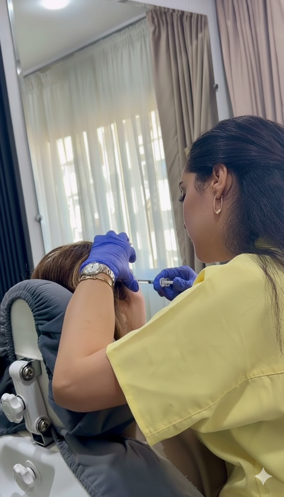
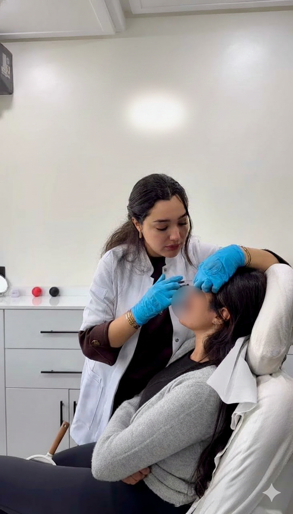

Vous dormez suffisamment, pourtant votre regard paraît fatigué, creusé, marqué. Ce décalage entre votre ressenti et ce que reflète le miroir est l'une des plaintes les plus fréquentes en médecine esthétique. Souvent, la cause n'est ni le manque de sommeil ni une « mauvaise peau », mais un sillon qui s'est creusé sous l'œil : le tear trough. Ce creux entre la paupière inférieure et la pommette vieillit le visage et donne un air épuisé, même au repos. Le tear trough Casablanca par acide hyaluronique comble ce déficit de volume sans chirurgie, sans cicatrice et avec un résultat naturel lorsque le geste est maîtrisé. Pour situer ce soin parmi l'ensemble des solutions injectables, consultez notre guide des injections esthétiques à Casablanca. Dr Yousra El Khadri réalise ce traitement au cabinet du Quartier des Hôpitaux, dans un cadre médical strictement encadré.
Qu'est-ce que le tear trough ?
Le tear trough, ou sillon lacrymal, désigne la dépression qui suit le rebord de la paupière inférieure jusqu'à la zone de la pommette. Anatomiquement, il correspond à la jonction entre deux plans du visage : la peau fine et mobile de la paupière, et le support plus volumineux de la pommette. Chez certaines personnes, ce sillon est peu visible ; chez d'autres, il se creuse tôt, par génétique ou avec l'âge.
Avec le temps, la graisse périorbitaire diminue, l'os de la pommette se projette moins, et le ligament qui retient la peau sous l'œil peut se marquer davantage. Le creux s'accentue, créant une ombre qui donne l'illusion de cernes profonds. Ce phénomène est distinct des cernes colorés :
- Cernes colorés : teinte bleutée (vasculaire) ou brunâtre (pigmentaire). Ils relèvent d'autres stratégies (éclaircissement, lasers, soins de peau).
- Cernes creux : déficit de volume, aspect « creusé » ou fatigué au repos. C'est précisément ce que traite le filler tear trough.
Confondre les deux conduit à des attentes irréalistes. Le tear trough ne colore pas la peau : il restaure le volume manquant pour atténuer l'ombre portée et harmoniser le regard.
Comment fonctionne le traitement par acide hyaluronique ?
Le principe est simple : injecter de l'acide hyaluronique, molécule naturellement présente dans les tissus, au cœur du sillon pour le combler progressivement et rétablir une transition douce entre la paupière et la pommette. Le produit attire l'eau et gonfle légèrement le tissu, ce qui « remonte » visuellement la zone creusée.
Cette zone exige une grande finesse technique. La peau y est très fine, presque translucide, et la vascularisation est dense. Un excès de volume, une profondeur inadaptée ou un geste mal maîtrisé peuvent donner un aspect gonflé ou irrégulier. C'est pourquoi le choix du praticien compte autant que le produit : l'injection tear trough demande une connaissance précise de l'anatomie péri-oculaire et une approche conservatrice, souvent en plusieurs micro-dépôts plutôt qu'un volume unique.
Les fillers utilisés au cabinet sont des gels d'acide hyaluronique adaptés aux zones délicates, issus de laboratoires médicaux certifiés. Aucune marque commerciale n'est indispensable à votre compréhension du geste : l'essentiel est la cohérence entre votre morphologie, la texture du produit et la technique d'injection. Pour une vue d'ensemble des indications des fillers au visage, la page dédiée aux fillers à l'acide hyaluronique détaille les zones traitées au cabinet.
Déroulement d'une séance à Casablanca
Au cabinet de Dr Yousra El Khadri, au Quartier des Hôpitaux, chaque parcours commence par une consultation. Dr El Khadri examine vos paupières au repos et en souriant, palpe le sillon, évalue l'épaisseur de la peau et recherche d'éventuels signes de rétention d'eau ou de poches graisseuses. Elle vérifie les contre-indications, vos antécédents (injections antérieures, chirurgie des paupières) et vos attentes. Le tear trough n'est proposé que si le creux est bien d'origine volumétrique.
Le jour du traitement, une crème anesthésiante est appliquée pendant une vingtaine de minutes. La peau est désinfectée, puis l'injection est réalisée avec une aiguille fine ou une canule, selon le protocole retenu. Le geste dure en général 20 à 30 minutes au total. Un léger gonflement ou des petits bleus peuvent apparaître : ils sont fréquents dans cette zone et disparaissent en quelques jours.
Le changement est souvent visible dès la sortie du cabinet, même si le résultat définitif se stabilise vers J+15, une fois l'œdème résorbé. Les consignes post-injection classiques s'appliquent : éviter le sport intense, la chaleur excessive et les massages sur la zone les premières 48 heures.
Les photos de la séance
Le tear trough se traite au millimètre près. Les images ci-dessous montrent la précision du geste et la délicatesse requise sur une zone où la peau est fine et la vascularisation dense.


Résultats et durée d'effet
L'objectif d'un filler cernes réussi n'est pas de « remplir » visiblement sous l'œil, mais de retrouver un regard reposé, lumineux, sans bosse ni surélevation. Un bon résultat se remarque par ce qu'on ne voit plus : la fatigue permanente, le sillon marqué, l'ombre creusée.
La durée d'effet varie en général entre 12 et 18 mois, selon votre métabolisme, votre hygiène de vie et la quantité initialement injectée. Un entretien ponctuel peut être proposé lorsque le volume diminue. L'acide hyaluronique reste réversible : en cas de besoin médical, une enzyme (hyaluronidase) peut dissoudre le produit. Cette réversibilité est un atout de sécurité, à condition qu'elle soit discutée et réalisée dans un cadre médical.
Pour un rajeunissement global du regard, le tear trough peut parfois être envisagé en complément d'autres actes sur le tiers supérieur du visage, comme le botox du front pour les rides d'expression, selon l'évaluation clinique. L'objectif reste toujours la cohérence du visage dans son ensemble.
Contre-indications et précautions
Le tear trough est un acte médical, pas un geste anodin. Il est contre-indiqué pendant la grossesse et l'allaitement, en cas de troubles de la coagulation non équilibrés, d'infection active sur la zone, ou d'allergie connue aux composants du produit. Si vous avez déjà reçu un filler dans le sillon lacrymal, l'interrogatoire précise sur le type de produit, la date et l'éventuelle asymétrie est indispensable avant tout nouveau geste.
Certaines morphologies se prêtent mal au tear trough : poches graisseuses marquées sous l'œil, peau très relâchée nécessitant une blépharoplastie, ou creux d'origine surtout osseuse. Dr El Khadri vous dira clairement si le traitement est adapté, ou si une autre option serait plus pertinente. Cette transparence fait partie de la sécurité du patient : mieux vaut une consultation honnête qu'une injection inadaptée.
Foire aux questions
Prendre rendez-vous au cabinet de Dr Yousra El Khadri
Vous souhaitez savoir si le tear trough peut adoucir vos cernes creux et redonner de la lumière à votre regard ? Le cabinet de Dr Yousra El Khadri, situé au Quartier des Hôpitaux à Casablanca, vous accueille sur rendez-vous pour une évaluation personnalisée.
Lundi au vendredi : 9h à 19h · Samedi : 9h à 14h
Pour aller plus loin
Fillers acide hyaluronique Guide injections Casablanca Botox du front Nos partenaires